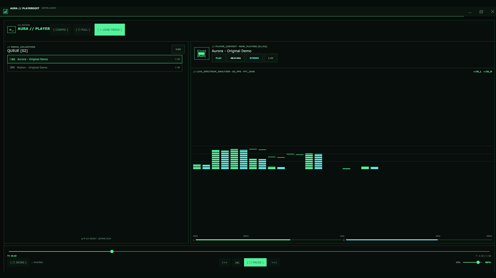

Tu biblioteca local
Escucha MP3, FLAC, WAV y OGG, y reproduce videos MP4, MKV o WebM desde una misma cola. Consulta los formatos de audio, video y subtítulos.
WINDOWS 10 / 11 · COMMUNITY 0.1.2
Tu música, tus videos y tus emisoras en una aplicación de escritorio. Aura Player Community es un reproductor multimedia libre y gratuito para Windows 10 y 11, con ecualizador, visualizador de espectro y una cola compartida para audio y video.
Windows x64 · Versión 0.1.2 · 53 MB · Sin firma digital. Versión preliminar de prueba. Descarga pública, sin iniciar sesión. Windows puede mostrar advertencias al ejecutar el instalador porque aún no tiene firma digital.

HECHO PARA ESCUCHAR
Escucha MP3, FLAC, WAV y OGG, y reproduce videos MP4, MKV o WebM desde una misma cola. Consulta los formatos de audio, video y subtítulos.
Ajusta el ecualizador, cambia la apariencia y personaliza el espectro RGB. La interfaz de escritorio está desarrollada en Go con Gio.
Community tiene código abierto bajo GPL-3.0-only y un repositorio propio. También permite buscar y escuchar radio online con Radio Browser e Icecast.
TRANSPARENCIA DESDE EL INICIO
El instalador se generó y validó localmente en Windows. Pasó las pruebas automáticas y la verificación de instalación aislada. La versión preliminar ya está publicada para pruebas y puede descargarse sin una cuenta de GitHub. El instalador todavía no tiene firma digital.
Consultar versiones ↗Descarga preliminar 0.1.2 para Windows 10 y 11 de 64 bits. Elige el instalador .exe o el ZIP portable. Ver descarga, instalación y requisitos.
Software libre bajo GNU GPL versión 3 únicamente (GPL-3.0-only). GNU GPLv3 es una licencia aprobada por la Open Source Initiative (OSI). Puedes usarlo, modificarlo y redistribuirlo, manteniendo la licencia y facilitando las fuentes correspondientes al distribuir versiones derivadas.
Consultar licencia vigente ↗ · Aprobación OSI de GPLv3 ↗Aura Player comercial nació primero. Community se derivó de su base original y después adoptó GPL-3.0-only. Ambas ediciones comparten autor e historia inicial; actualmente mantienen repositorios y distribución separados. La edición comercial conserva su propia licencia.
PREGUNTAS FRECUENTES
El botón principal descarga Aura-Player-Community-Setup-0.1.2.exe, el instalador gratuito para Windows x64. La guía de descarga explica la instalación y la alternativa portable .zip. La versión preliminar es pública y no requiere iniciar sesión en GitHub. Descarga el .exe y ejecútalo para instalar Community.
Sí. GPL-3.0-only permite modificar y redistribuir el código, también comercialmente, cumpliendo sus condiciones de copyleft y entrega del código fuente correspondiente. Los componentes de terceros conservan sus licencias.
Utiliza los Issues del repositorio Community. Incluye tu versión de Windows y los pasos para reproducir el problema.
CON CARIÑO
Aurora, tú fuiste quien me motivó a crear este proyecto. Te quiero y siempre espero que estés bien.
Con amor, papá.